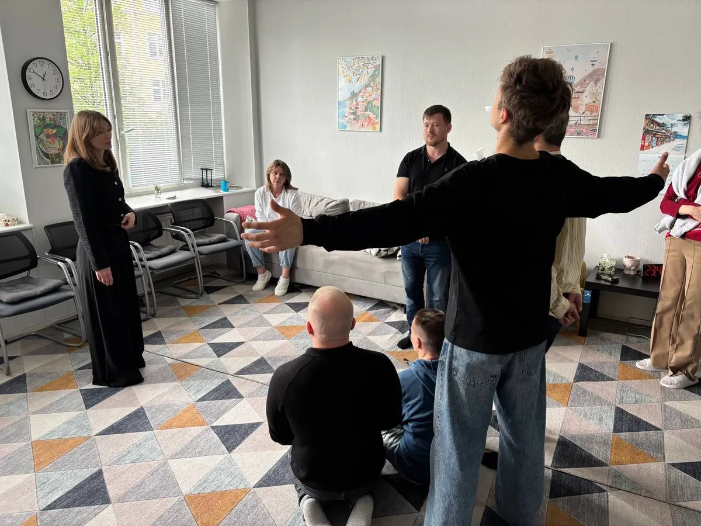
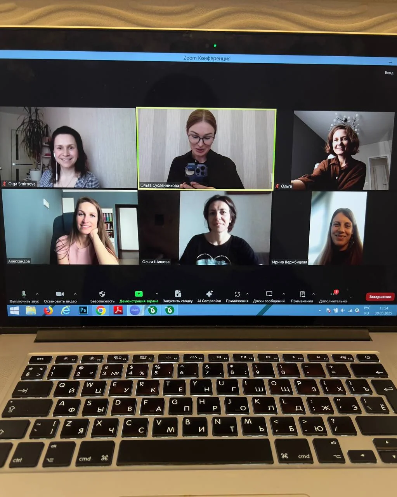
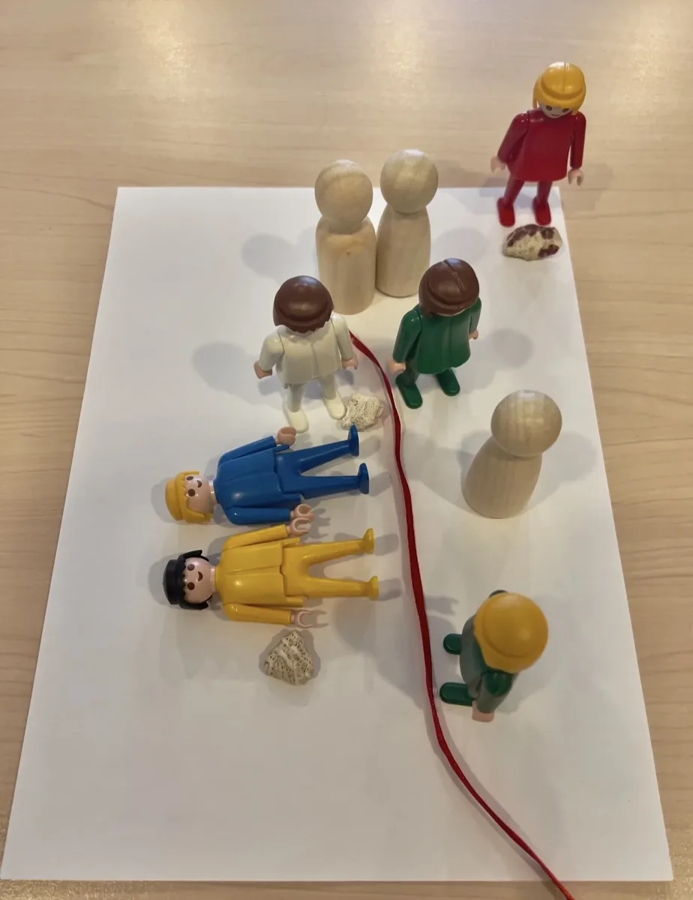
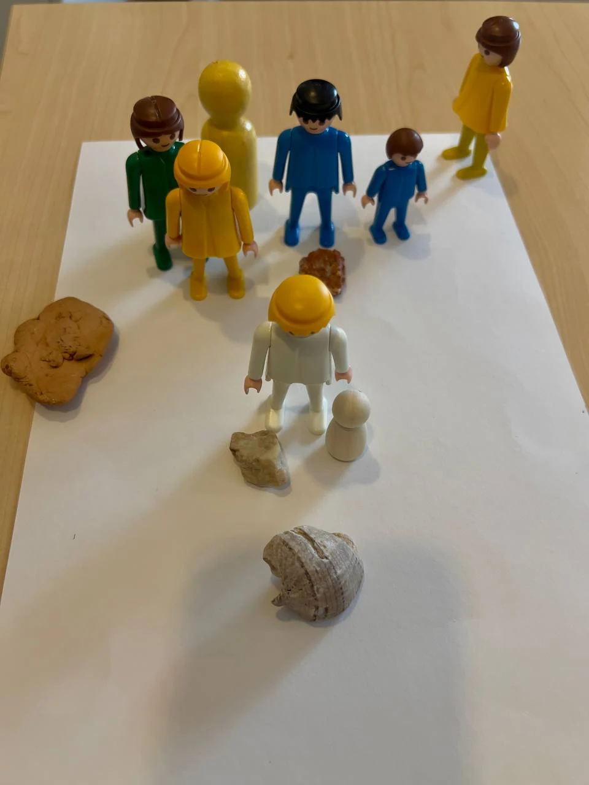

Открытость
Широта взглядов и безоценочность.
глубина · осознанность · выбор
Проблемы в отношениях подрывают уверенность в себе и влияют на все сферы жизни.
Одна расстановка может кардинальным образом изменить ситуацию.
Принципы работы
Широта взглядов и безоценочность.
Атмосфера, где можно быть собой.
Я рядом с вами в вашей точке А.
Фокус на решении и движении вперёд.
обо мне
Меня зовут Ольга Сусленникова. Я клинический психолог, гипнолог, мастер и тренер НЛП, специалист по системным семейным расстановкам.
Когда кажется, что вы застряли и все привычные способы «собраться» не работают, особенно важно не остаться с этой тяжестью один на один.
Более 15 лет я помогаю людям справляться с трудностями, менять мышление и поведение, налаживать отношения и достигать целей.
В работе я сочетаю системное видение с элементами коучинга, НЛП и мягкие трансовые техники. Такой подход позволяет одновременно корректировать системные нарушения, перестраивать привычные реакции, стабилизировать эмоциональное состояние и возвращать себе контакт с собой.
Профильное образование по клинической психологии помогает мне грамотно оценивать проблему клиента и не работать там, где нужна другая помощь.
В работе со мной вы можете рассчитывать на моё бережное внимание, атмосферу безопасности и профессионализм.
Записывайтесь на диагностическую консультацию, где мы сможем ближе познакомиться и разобрать вашу ситуацию.
Уже после первой встречи вы можете почувствовать себя лучше.
Дипломы и сертификаты
о методе
Системная расстановка — это возможность посмотреть на свою ситуацию со стороны, исследовать отношения, чувства и повторяющиеся сценарии, в которых бывает сложно разобраться самостоятельно.
Обсуждаем запрос Проясняем суть проблемы и определяем фокус работы.
Выбираем заместителей Участники группы (или фигурки) представляют значимых людей или элементы ситуации.
Размещаем в пространстве Вы располагаете заместителей так, как подсказывает ваше внутреннее ощущение.
Наблюдаем за происходящим Обращаем внимание на ощущения, движения и реакции заместителей.
Исследуем взаимосвязи Находим системные нарушения, влияющие на нынешнюю ситуацию.
Находим решение Меняем конфигурацию и характер взаимодействия элементов в системе.
Интегрируем результат У вас появляется новое внутреннее состояние и ощущение возможности двигаться вперёд.






Вы можете прийти с любым жизненным вопросом, который вызывает тревогу, внутренний конфликт или ощущение застоя.
Конфликты, дистанция, трудности с доверием, близостью и взаимопониманием.
Отношения с родителями, детьми и родственниками, семейные роли и ожидания.
Переживания, связанные с завершением отношений, трудности с принятием перемен.
Похожие ссоры, одни и те же трудности — хотя хочется, чтобы всё складывалось иначе.
Тревога, внутреннее напряжение и противоречивые чувства.
Сомнения, страх ошибиться и трудности с выбором, когда непонятно, какой шаг сделать дальше.
Самооценка, личные границы, понимание своих потребностей и того, что для вас важно.
С помощью системных расстановок можно также решать запросы, связанные со здоровьем (психосоматикой), лишним весом, химическими и нехимическими зависимостями, деньгами.
Это уникальная помогающая практика, работающая там, где другие методы бессильны.
форматы и стоимость
Работа с вашим запросом на фигурках в комфортном режиме.
Выбрать времяГрупповой формат онлайн в Zoom с участием других людей (заместителей).
Выбрать времяГрупповая работа с заместителями в СПб. Дату и место уточняйте при записи.
Выбрать времяДля подтверждения записи необходима предоплата. Отменить запись можно не позднее чем за 24 часа до начала встречи.
Вот что говорят клиенты о своём состоянии после расстановки:
Расстановка — это встреча с правдой. И эта правда делает вас свободнее.
отзывы клиентов
Впечатления от работы индивидуальны. Отзывы не гарантируют аналогичный результат.
«После расстановки я наконец увидел главное: я искал не девушку, а одобрение. Увидел это — и отпустило. Теперь я просто выбираю себя, учусь опираться на свои желания и смотрю, что будет дальше».
«Развод дался очень тяжело, во мне жило много вины и стыда. Расстановка помогла посмотреть на ситуацию со стороны и увидеть, что в разрыве нет единоличного „палача“. Я выдохнула, перестала бесконечно корить себя и смогла наконец начать жить дальше».
«Расстановка дала мощный срез ответов и чётко подсветила причину, почему я буксую в теме денег. Появилось понимание, откуда растут ноги у этой проблемы. Путь изменений ещё впереди, но теперь я хотя бы знаю, куда смотреть и над чем работать».
«Я всегда всем во всём уступала, боялась сказать „нет“ и обидеть близких, а внутри копилась жуткая злость. На расстановке на фигурках я физически увидела, как взвалила на себя чужие роли. Огромное облегчение — впервые почувствовать свои границы и занять своё место».
«Было ощущение полного застоя, когда ходишь по кругу и не понимаешь, куда двигаться дальше. Формат онлайн-группы с заместителями меня сначала смущал, но атмосфера оказалась очень бережной. Ушёл этот фоновый липкий страх, наступила какая-то внутренняя тишина и ясность».
«Долго не могла сепарироваться от мамы, любые разговоры заканчивались чувством вины. После сессии у меня будто спал тяжёлый груз с плеч. Я впервые посмотрела на маму не как на ребёнка, которого надо спасать, а как на взрослого человека. Стало намного легче дышать».
Нет. Присутствие обоих партнёров не требуется. Работа с отношениями в этом методе может эффективно проводиться и с одним человеком.
Есть отдельный вид расстановок — «расстановка для пары». Обычно применяется для достижения общей цели. Целесообразность такой расстановки можно обсудить на диагностической сессии.
Нет. Метод не опирается на эзотерические концепции. В его основе лежат идеи системной семейной терапии, психодрамы и феноменологический подход.
Оба варианта эффективны. Отличие в том, что в индивидуальной расстановке для «распаковки» и проживания чувств есть только два человека — клиент и терапевт. В группе же дополнительно другие люди могут помочь в этом процессе.
На вопрос, какой вариант работы — групповой или индивидуальный — подойдёт именно вам, я смогу ответить на диагностической сессии.
Нет :) Это один из популярных мифов.
В расстановке мы действительно часто ставим маму или папу, но только как «объекты», через которые удобно смотреть на системные психические процессы.
В центре внимания расстановки всегда клиент и его личный запрос: отношения, самоощущение, конкретная проблема.
Фигуры родителей — лишь инструмент для раскрытия личной темы.
Перед расстановкой я рекомендую записаться на диагностическую сессию, где мы сможем лучше «развернуть» ваш запрос и подготовить почву для продуктивной расстановки (или же подберём другой формат терапии)..